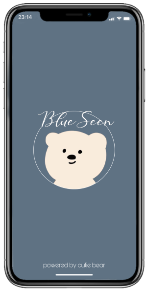

BlueSeen
Somos una aplicación que está orientada a toda la audiencia que necesita un apoyo amable y cálido en momentos difíciles. Nuestro objetivo es brindar un espacio donde el usuario pueda interactuar consigo mismo y las emociones que sienta en el momento presente. Para eso disponemos de cuestionarios, juegos simples y dinámicos, áreas creativas y sugerencias de entretenimiento. Todo con la finalidad de identificar y explorar las emociones del usuario como el mismo lo decida.